文化大學
靈異指數：
危險指數：
台灣的大學校園內，總會有些鬼故事流傳在學生之間，其中位於陽明山上的文化大學，校內八卦式的建築「大仁館」，就有不少靈異傳說，甚至有台恐怖的「鬼電梯」。
據傳大仁館位於陰陽交界處，需要八卦式的格局鎮壓，不過興建時沒有按照原始設計圖施工，因此成了招陰的「反八卦」。
而館內著名的鬼電梯，傳言中儘管沒有人按電梯，也會自動開關門；也曾發生過明明只有一人搭乘，外頭的人卻看見「人」滿為患的詭異畫面。


 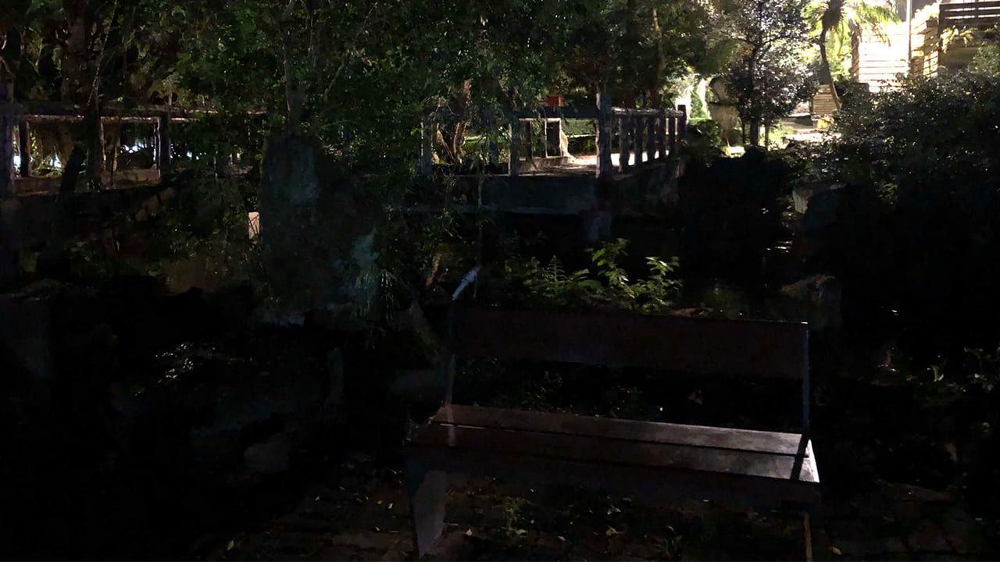
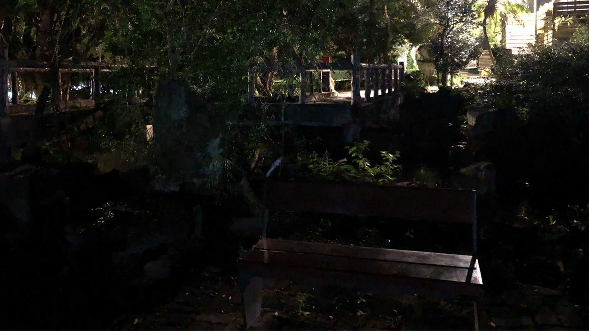

錦新大樓
靈異指數：
危險指數：
有「台北第一兇宅」之稱的錦新大樓，前身是「時代大飯店」，1984年5月28日，當時二樓餐廳疑因電線走火，引燃大火，加上建築採玻璃帷幕設計，濃煙沿著飯店空調迅速瀰漫，釀成19人死亡，49人輕重傷的慘劇。
這棟建築物後來改成出租套房，並更名為「錦新大樓」，但仍然事故不斷。
包括在1986年時，發生了著名的女子跳樓輕生，反而壓死賣肉粽小販的案件。1996年時又疑似因為遭人縱火，造成2死61傷，2010年還有情侶被發現陳屍在11樓。離奇案件不斷，錦新大樓因此成為台北著名的靈異建築。


 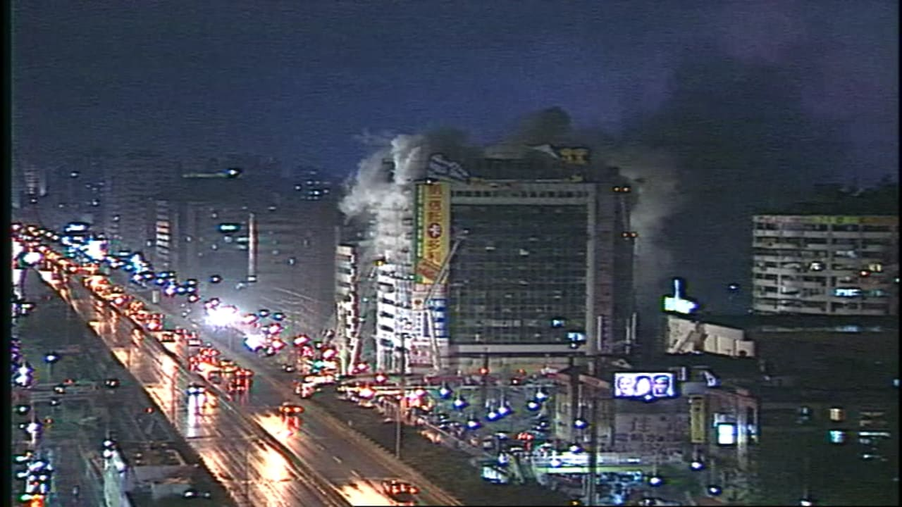
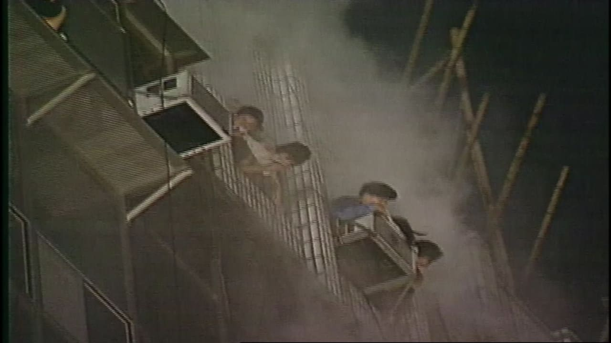
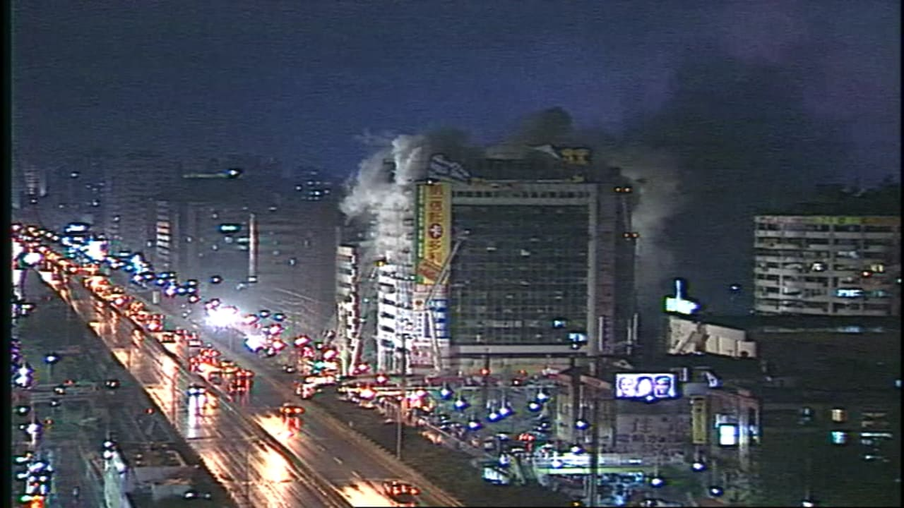
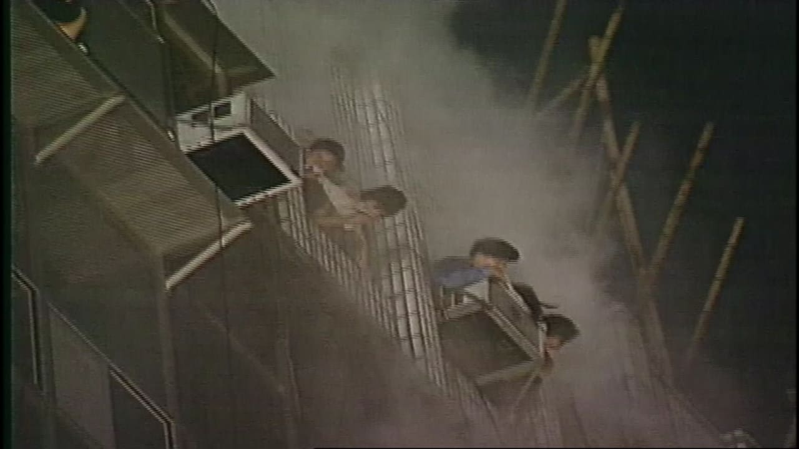

衛爾康西餐廳
靈異指數：
危險指數：
1995年2月15日，台中市西區的衛爾康西餐廳發生火災，因為當時內部裝潢使用易燃材料，導致火勢迅速蔓延，加上一、二樓逃生通道堵死，許多顧客逃生無門，最終釀成64人死亡，11人受傷的嚴重事故。
這起事故，為台灣有史以來單一建築物死亡人數最多的火災，亦是台灣自解嚴後，死亡人數最多的公共安全事故。
也由於火災事件死傷眾多，案發地點相關靈異傳聞頻傳，其中最有名的，就是有民眾聲稱在火災時，看到疑似載滿亡魂的「幽靈船」飄在餐廳上空，要等到載滿100條人命才會離去。
 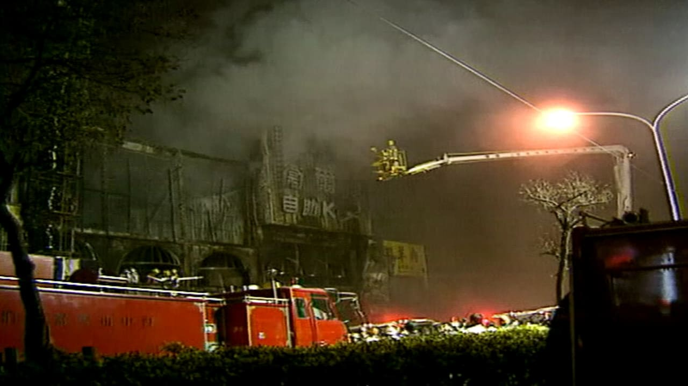
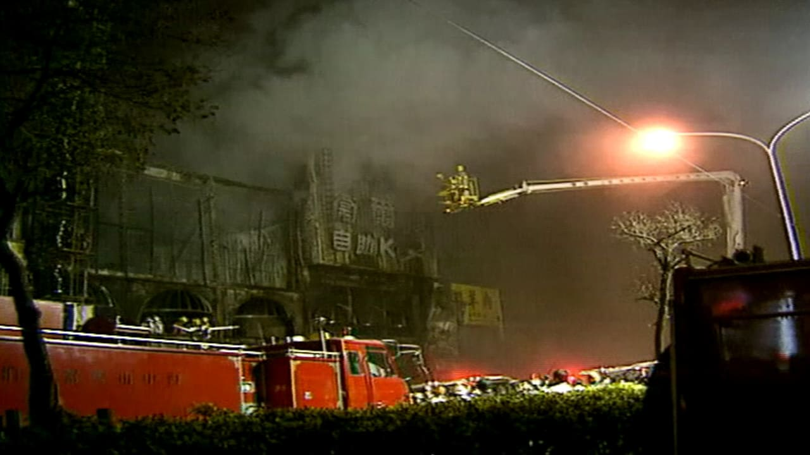

 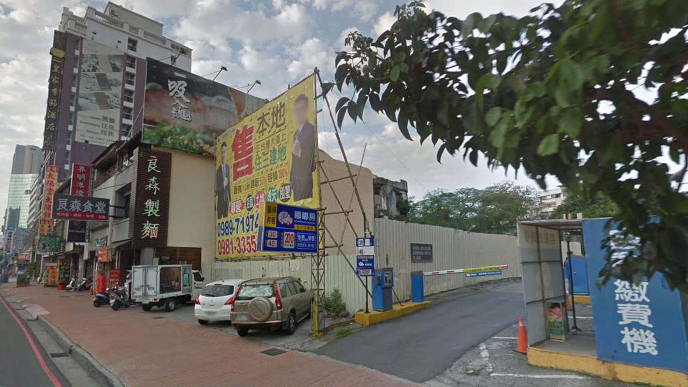
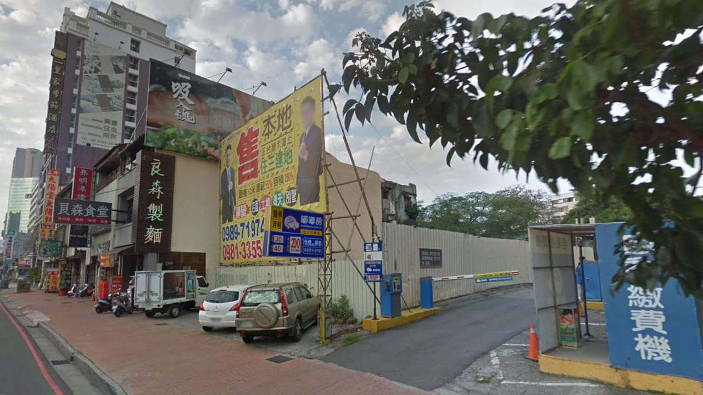
洪若潭命案
靈異指數：
危險指數：
2001年9月5日15時，眾源公司總經理因為支票到期，前往公司負責人洪若潭住處詢問處理方式，卻發現留在民宅內的遺書，向彰化警方報案。
之後警方在洪宅後院焚化爐下方有二雙拖鞋，焚化爐內發現焚化爐旁則有一具研磨機。警方於焚化爐內部找到了兩具燒焦骨骸，經DNA比對後確定為洪若潭夫妻，三名子女則下落不明。
洪若潭在遺書中指出已將子女的骨灰磨成粉，並撒入海中。檢方後來以洪若潭、姚寶月夫婦兩人自殺、三名子女失蹤滿七年宣告死亡簽結。
發生過這起震驚全台的兇案，洪宅在當地也多了不少靈異傳聞。現任屋主的朋友陳姐表示，搬移焚化爐時曾有一條很大的白蛇掉出來，還有其他友人夜間如廁時，也曾在屋內看過洪若潭的鬼魂在沙發上睡覺。

 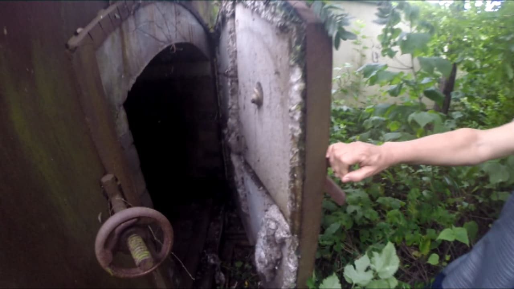
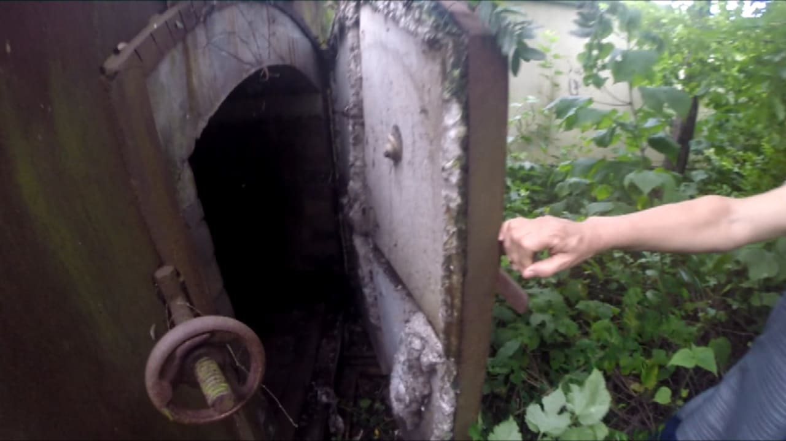
 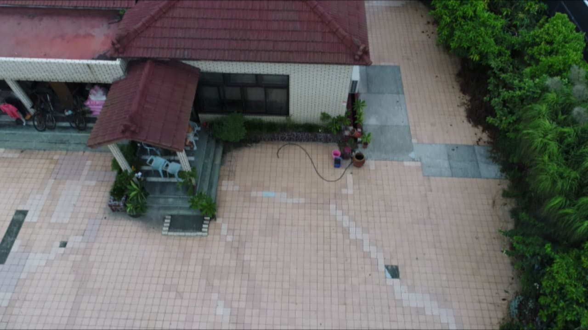
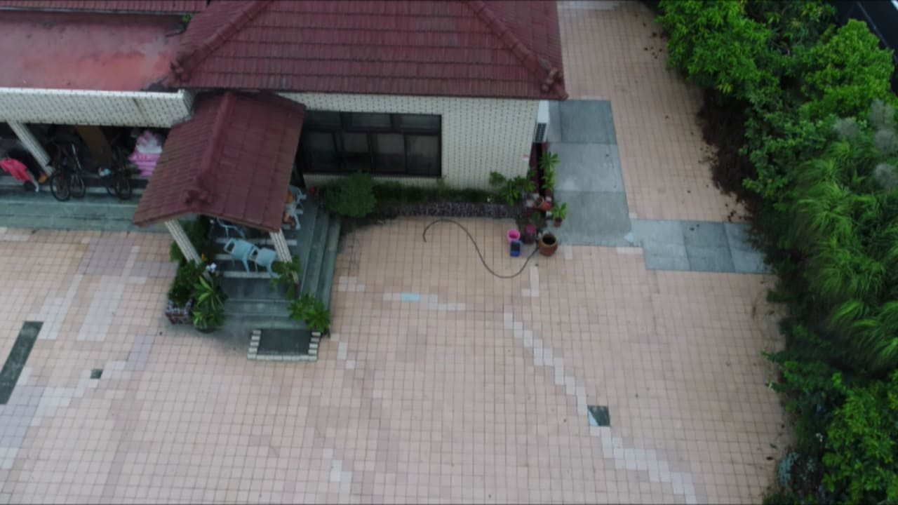


民雄鬼屋
靈異指數：
危險指數：
提到台灣第一鬼屋，很多人馬上會聯想到位於嘉義的「劉家古厝」，也就是「民雄鬼屋」。傳說劉家主人當時在一團神火的指引下，找到了這塊風水寶地，便在此興建了三層獨棟洋房。
不過劉家古厝荒廢後，開始出現各種故事，傳聞當年的女主人，懷疑男主人與婢女暗通款曲，便極盡虐待婢女，最後婢女因不堪受虐，含恨投井自殺。還有一說是某年日軍在此借宿，最後每個人卻離奇舉槍自盡。
雖然各種傳說沒有根據，不過來此探險的民眾，都認為多年來無人居住，且被榕樹纏繞的劉家古厝，聚集許多陰氣，加上靈異傳說層出不窮，因此被列為全台鬼屋之首。

 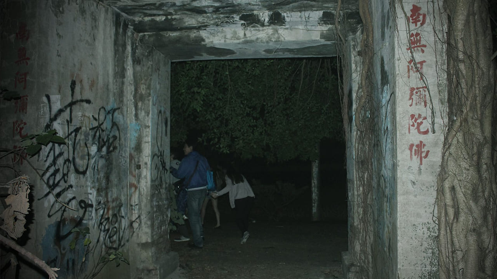
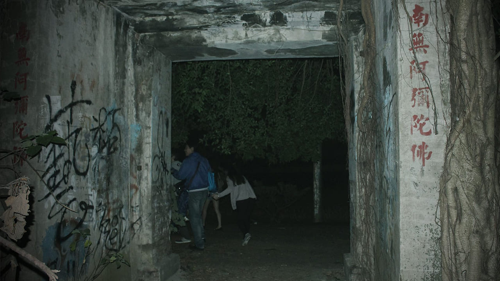
杏林醫院
靈異指數：
危險指數：
位於台南市的杏林醫院，過去因為偽造醫療紀錄，而被勒令停業，至今已經荒廢26年。由於內部留有當時使用的醫療器材，門口有時還會出現冥紙、符咒，因此傳出不少靈異事件。
幾年前，曾有年輕人半夜硬闖杏林醫院試膽，還在臉書拍照打卡，接著就接到未顯示號碼來電，對方痛苦地喊著「快來救救我」。也曾發生過稽查人員入內勘查，結果出來後覺得頭暈想吐。
也因為靈異事件不斷，杏林醫院被網友封為「全台最大鬼屋」。


花崗石醫院
靈異指數：
危險指數：
位於金門的「花崗石醫院」，是座藏身於地下坑道的廢棄醫院，但在2007年停業後，因長期不見天日，內部四季陰涼，加上走道錯綜複雜，因此靈異傳聞不斷，連當地民眾也規勸不要靠近。
實際進入裡頭，除了能看見少數病床、手術台等相關醫療器材，當年各處室的牌子也都還保存著，而經過通往太平間的「天堂路」時，也讓人不寒而慄。


花蓮五子命案
靈異指數：
危險指數：
2006年9月花蓮縣警方接獲報案，指出吉安村一棟民宅發出惡臭，警方破門而入後發現，屋主劉志勤的5名子女陳屍並堆疊於浴室，手腳被鐵絲綑綁，劉志勤與其妻林真米則是失蹤。
直到2015年6月時，劉志勤夫妻的屍骨在附近山區被發現，警方鑑定後，在遺體中發現了農藥成分，推測兩人畏罪自殺，服用農藥中毒休克而死。
五子命案發生後，這棟凶宅雖然陸續出租，但入住時間都不超過3個月，還有一名醫師自稱篤信科學，不信鬼神，卻在入住2個月後倉皇搬走。更有道士在凶宅設壇作法後搬進去，但不到半個月後就落跑，說是煞氣太重，神明也壓不住。
而目前居住的屋主，則表示因為「神明托夢」，在請法師處理過後，決定購屋給兒子當新房。


 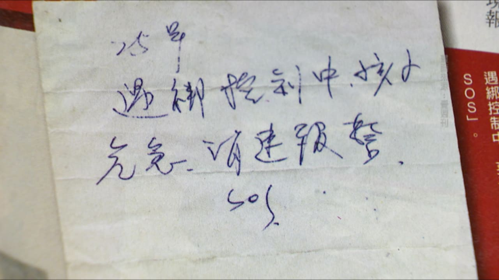
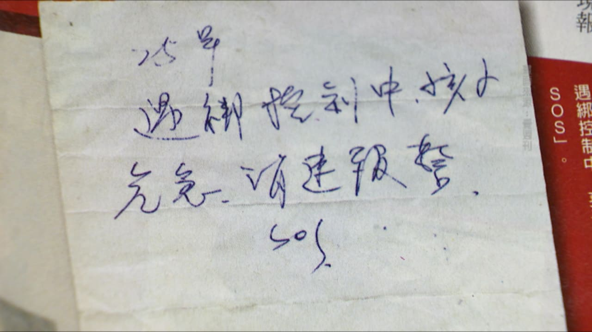